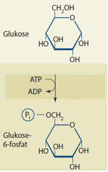

Biologi A
Opgave 1. Bakterievækst
En forskergruppe besluttede at undersøge effekten af et nyt antibiotikum, der måske kan nedsætte aktiviteten af enzymet hexokinase i visse bakterie-stammer. Hexokinase katalyserer reaktionen, som er vist på figur 1.

Figur 1. Kemisk reaktion, som katalyseres af hexokinase.
| 1. Beskriv reaktionen, som hexokinase katalyserer, herunder dens betydning for respirationen. Inddrag figur 1. |
En stamkultur af en bakterie-stamme blev delt i to grupper på 10 kulturer hver. Den ene gruppe fik en dosis af det nye antibiotikum (A+), mens den anden gruppe fik et ikke-virksomt stof (A-). Alle kulturer voksede i et medie med 100 mmol/L glukose og under identiske forsøgsbetingelser.
Efter to dage blev koncentrationen af glukose målt i hver kultur. Data fremgår af filen i dette Excel-dokument.
2. Foreslå relevant databehandling for at sammenligne resultaterne fra de to grupper, som er vist i Excel-dokumentet.
3. Lav et boksplot af data fra de to grupper.
4. Analyser boksplottet.
5. Vurder om det nye antibiotikum virker.